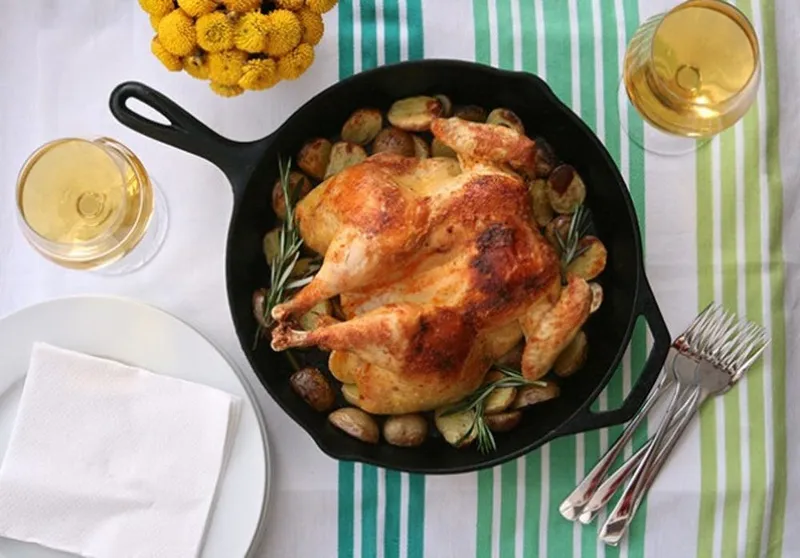

Lemon Chicken

Lemon Chicken
Snag a chicken, potatoes, and one bunch-o'-herbs (your choice), and dinner’s set for about $13 — and that’s if you shop at a fancy grocery store. We spatchcocked the chicken, which is just a fancy way of saying “removed the backbone,” to save you roughly 15 minutes of cook time. Store leftovers in an airtight container for up to five days or invite friends over for a (no-fuss) French-y treat!
Ingredients
- 1½ pounds baby Yukon gold or red-skinned potatoes, halved
- 1 bunch fresh herbs (such as rosemary, thyme, or sage)
- 1 whole chicken (about 3 pounds)
- PANTRY STAPLES: Extra-virgin olive oil, kosher salt, and freshly ground pepper.
Steps
- Preheat the oven to 450˚. Toss the potatoes, two tablespoons olive oil, one tablespoon chopped herbs (your choice), and ½ teaspoon salt in a large cast-iron skillet or shallow baking dish. Spread in an even layer.
- Remove the giblets from the chicken, if needed. Rinse and dry the chicken very well (inside and out) with paper towels. Put the chicken, breast-side down, on a cutting board. Starting at the bottom, cut along both sides of the backbone using kitchen shears or very sharp scissors; discard the backbone. Flip the chicken over and open it like a book; press down on the breastbone to flatten.
- Brush chicken with one tablespoon olive oil and generously season all over with about 1½ teaspoons salt and ½ teaspoon pepper.
- Put the chicken on top of the potatoes in the skillet (tuck some extra herbs under the chicken, if desired) and roast until golden and a thermometer inserted into the thigh registers 180˚, about 45 minutes. Let cool slightly before serving. Garnish with more herbs, if desired.